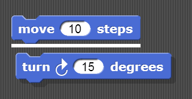
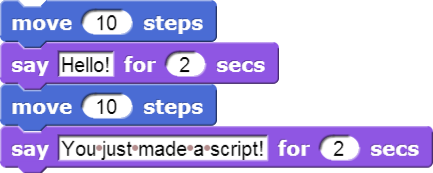
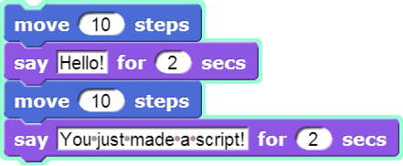

You can snap blocks together (hence the name snap) to build up a set of instructions, a script. Drag one block right underneath another to snap them together. The white bar that appears (see the picture below) shows you where the block will go after you drop it.

A snap program consists of one or more scripts.
- Create this two-block script in the scripting area. Click on it a few times to see what it does.

While a script is running its border is highlighted. This one runs so quickly that you may have to look closely to notice the brief border flash.
-
Here is another script to create. Predict what it will do and then try it out.

This script takes longer to run, so it's easier to notice the highlighted border.

Blocks in a script run in a specific order, from the top of the script to the bottom. Generally, snap waits until one block has finished its job before continuing on to the block below it. (One common exception is blocks that play sounds: a block's job can be to start the sound, which means the block below it will execute while the sound is still playing.)